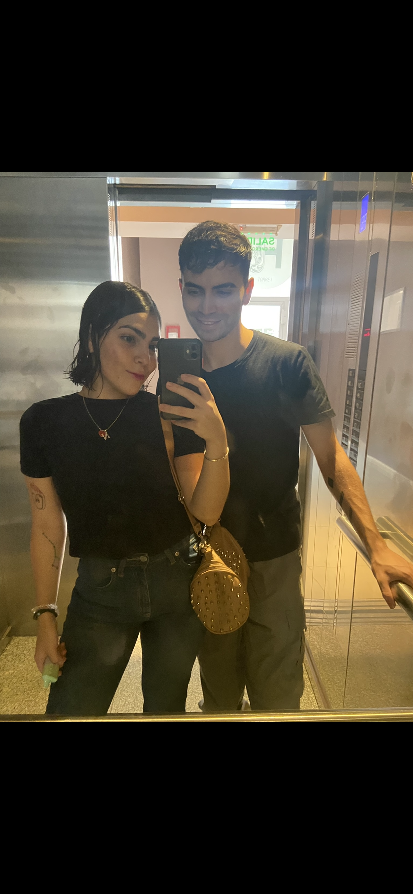
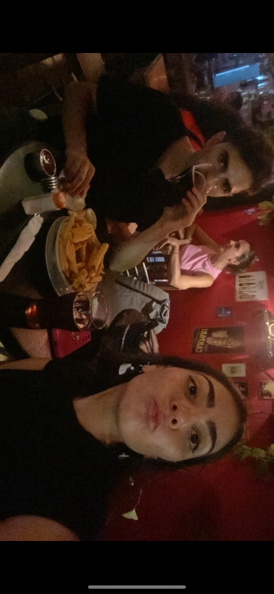
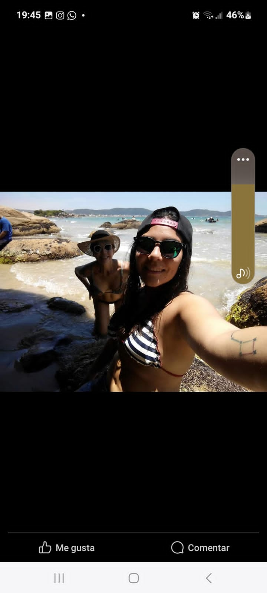

Quien dijo que está bebé se iba a convertir en la mujer más fuerte del mundo y con una gran fortaleza y inteligencia
Como olvidar también que ama las cosas dulces y la comida rara esa que ella solo come y la hace tan especial y única
Que con una sola sonrisa te hace olvidar todo lo que pase a tu alrededor y que simplemente te de serenidad

Ella es alguien especial, tanto en la forma en la que se viste como en la forma de dirigirse
Ella que con solo verte, ya quiere ayudarte. No importa que tan mal este, ella siempre va a estar ahí para acompañarte e ayudarte
También esos ataques de energia que le agarran y te empieza a morder llenandote de amor y alegría. Porque eso contagia, alegría

Sus salidas que la hacen tan especial desde la forma en que se viste, se pone los aritos, el collar y con eso. Solo eso, te hace especial también la salida
Con tan solo despertarte todos los días y tenerla al lado, es algo mucho mejor que comer muzzarella, asegurado 100% de un fan de una pizza
Sólo mirenla como mira con pasión a todo, lo que dibuja, lo que pinta, lo que hace, esa voluntad de fuego, de acero, la hace tan increible y fácil de admirar
Ella es la mujer definitiva que busca sus objetivos y los logra, la vas a ver llorar, decaida, cansada, pero con una sonrisa se come el mundo. Se levanta y va por todo
La vas a ver equivocarse, la vas a ver irse por un camino diferente al que ella tenía planeado. Pero siempre se corrije, siempre alienta a los demás a ir por todo. Siempre vuelve a encontrar su camino y ser la persona increible que es
Por eso, te dejo con esta última imagen para que veas lo asombrosa, que sos. Podría seguir y seguir y no me cansaría de decirte la clase de persona que sos. Cumpliste tus objetivos así como si nada, sos INCREIBLE
"Tan hermosa mamá y tan bebota la que proto será la profe de artes" by Madre
Esa mujer tan hermosa y tan bien vestida y con su abuelo que parece todo un galan. Se que el ahora te ve toda una mujer recta y derecha, feliz de las cosas que estas cumpliendo y por las cosas que estas por cumplir, no pares. Supongo que es cuando terminaste la secundaria, tan cautivadora que haces que cada entorno donde estes brille.

Mirate bien con esa sonrisa de cachete a cachete y con ese cartel que desde acá puedo leer "MIREN CARAJO, ME ESTOY POR LLEVAR EL MUNDO POR DELANTE Y NADIE ME VA A DETENER!"
No olvidar cuando estabas con Feli, es un peque grandote. Que sabemos que va a marcar sus pies y va a hacer historia. En lo que quiera que el quiera ser, y se que su tía siempre va a estar ahí para ayudarlo a levantarlo cuando se caiga

Y también que increible que viajes y viajes y conozcas, creeme que cada una de esas son pequeñas marcas que dejas por el mundo, ya se cada ciudad, provincia, país que viajes. Esas pequeñas experiencias que te van a marcar y que tengas tantas anecdotas para contar a tus amigas, a mí (Brad Pitt/Henry Cavill). Esas memorias que no se borraran y que permanecerán solo en tu cabeza
Ella que brilla donde sea, con su hermosa familia y tan contenta. Llena de cosas buenas como cosas malas, esas cosas que tiene tan perfectas como imperfectas. Creeme que se cuando una persona tiene tanta energia y es perfecta. Sos hermosa tal y como te veo todos los días de mi vida
Y no podía faltar una con toda tu familia, una familia increible. Claramente que siempre te van apoyar, te van acompañar en tus primeros pasos y ultimos. Mirate en esa foto y hasta yo la veo, y esa Nahir de esa foto estaría llorando y saltando de la emoción de la mujer que hoy sos. Tu familia debe estar orgullosa de vos de una forma como lo estoy yo cada día que me despierto y te veo dandolo todo. Por eso te mereces este hermoso día todo y mucho más. Feliz cumpleaños mi amor!